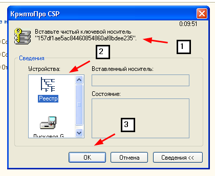
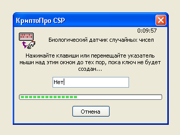
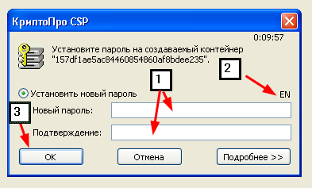
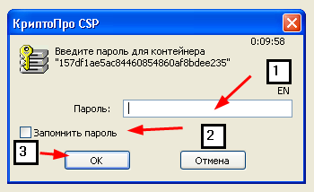

The cryptographic service provider КриптоПро CSP is ready for the procedure of the closed signature key container generation. The closed key will be used to encode your data during transferring reporting documents via protected connection channels.
After this, the query to create the signature key certificate will be used.
Creation of the closed key container
If you have set up different readers for КриптоПро CSP, during generation of the closed signature key container you will see the dialog box of the cryptographic service provider containing settings of the container storage location (picture 1.).

Picture 1.
You may agree with initial settings of the container name and storage location or change them.
The premature modification of the container storage location (pictures 1., 2) on the PC may involve the considerable threat of the closed key compromise. To avoid this situation, it is not recommended to save the container to readers:
It is recommended to leave default values.
When choosing the container storage location on the medium (pictures 1., 2) (e.g., eToken etc), it should be remembered that the medium must be connected at all stages of the system work:
You will see the window "Biological random number generator" (picture 2.).

Picture 2.
This window initialises the random number generator based on the user activity. For initialisation, move the cursor of the mouse within the window "Biological random number generator" or press various buttons on the keyboard.
After the random number generator is initialised, you will see the password input window for access restriction to the closed key container (picture 3.).

Picture 3.
Before entering the password, you must check the input language (picture 3., 2), whether the button "Caps Lock" is active. The minimum length of the password is 6 symbols. It is not recommended to set up simple passwords (picture 3., 1). 3., 1). It is recommended to write or to save the entered password somewhere because if you forget it you will not be able to use the digital signature to sign and to encrypt reporting documents. After entering the password and its confirmation press the button "OK" (picture 3., 4). 3., 4).
If the container has been created, its location will be shown in the window "Service messages" of 1C platform (the message of the type "A new container is created:A new container is created:REGISTRY\\81cc0430f80b45369485a19c844683eb".
Then you will see the window with the request to enter the container password (picture 4.).

Picture 4.
Enter the preset password (picture Enter the preset password (picture 4., 1) and press the button "OK" (picture 4., 3). 4., 3). After that, the request to create the digital signature key certificate will be completed.
You may put the checkmark "Remember password" (picture 4., 2). It is convenient because:
· The password will be used even if lost.
· You will not be required to enter the password on intermediate stages of the certificate query generation and installation of the certification to the closed key container.
Disadvantages of saving the password:
· An unauthorised user may use the digital signature.
· The chance to discredit the key increases.
If the query to the certificate has been successful, the query will be attempted to be sent after input of the password.
When the response is got from the server ("Update query statuses (get the response from the server)"), you may also need to enter the password for the key container.
· To the window "Service messages";
· As windows with messages to the user.
· In the field "Comments" of the query table.